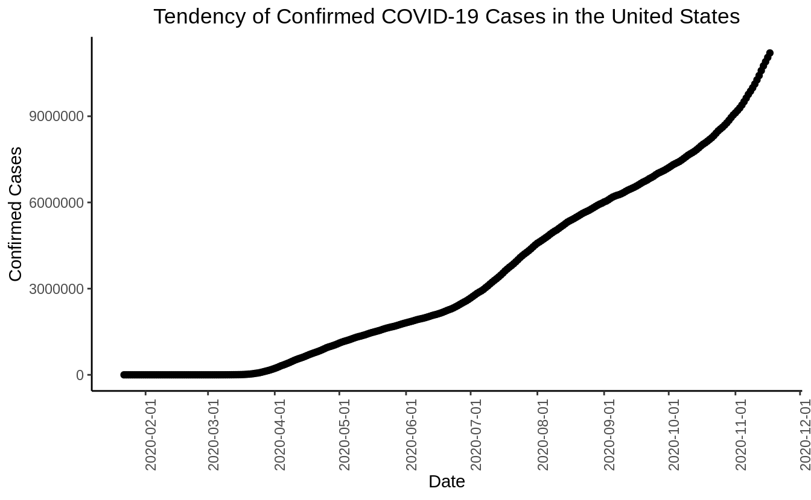
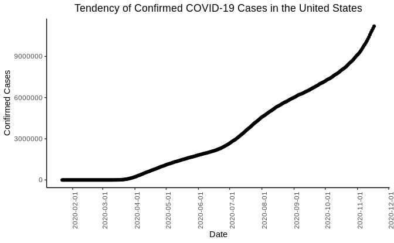
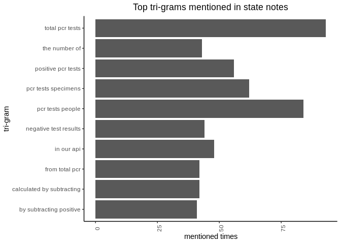

COVID-19 condition study in the United States
liyongsh@usc.edu
Introduction
COVID-19 is a global pandemic that affects our health and life. By exploring the COVID-19 condition, we can make take possible actions to better contain its spread and make plans for the future. In this project, we mainly study the COVID-19 condition in the United States.
How is the COVID-19 condition in the United States now? The question can be answered from the following perspectives.
- Q1: Condition Overview. Latest status about the accumulated confirmed case numbers,new confirmed cases,accumulated death,new deaths
- Q2: Tendency. The tendency of COVID-19 infection.
- Q3: Death Rate. The death cases in terms of each state.
- Q4: Key Information. What is the key latest information we should pay attention to.
Methods
The COVID Tracking Project is a volunteer organization to publish the data required to understand the COVID-19 outbreak in the United States. The website provides APIs for accessing the data: https://covidtracking.com/data/api.
The data used for this project is as follows:
- https://api.covidtracking.com/v1/us/daily.csv: Historical Data of COVID-19 in the United states.
- https://api.covidtracking.com/v1/states/info.csv: Basic information about states, including notes about our methodology and the websites we use to check for data.
- https://api.covidtracking.com/v1/states/daily.csv: all COVID data available for every state since tracking started.
This project uses the following packages to achieve the analysis:
- data.table: read in web link data and converting to data.tables.
- tidytext: extract ngrams from a text sequence.
- ggplot2: produce the graphs.
- knitr: knitr the document and produce nice-look markdown tables
- tidyverse: data cleaning, filtering and so on.
- head(), str() and so on are used for basic data explorations.
The data link can be directly read into a data.table using data.table::fread
Preliminary Results
Q1: Condition Overview
Here is the summary of the latest status about the accumulated confirmed case numbers,new confirmed cases,accumulated death,new deaths
| date | accumulated confirmed case numbers | new confirmed cases | accumulated death | new deaths |
|---|---|---|---|---|
| 20201117 | 11202265 | 155201 | 239782 | 1565 |
Q2: Tendency.
The tendency of COVID-19 can reflect how will this pandemic will proceed into the future. Is it getting better or worse?

The line graph depicts the tendency of the COVID-19 pandemic. We can see that there are more and more people getting infected with COVID-19. The curve does not seem to be more flat as the time goes. Therefore, we have not reached the turning point in which the actual condition gets better.

From the curve of the Increased positive cases, we can see the new confirmed cases recently are significantly less than before, plausibly indicating that COVID-19 virus is leaving. However, this may subject to many factors’ influences like testing capacities.
Q3: Death Rate
There are some NAs in this dataset for variable death. we can remove it using dlpy::filter function. The basic summary of death variable is as follows:
| Min. | 1st Qu. | Median | Mean | 3rd Qu. | Max. | NA’s |
|---|---|---|---|---|---|---|
| 0 | 83 | 588 | 2333.126 | 2490 | 26189 | 818 |

Death number is a good indicator to show the COVID-19 status in a state. We can see from the bar graph that New York State is the most severe state with regard to death cases. Still then, there are some states showing a very low death number such as AS, MP,GU, VI and so on.
Q4: Key Information
The COVID Tracking Project also gathers notes from every state. These notes are informative for us to know about what is happing with the COVID-19 status with the state. In other words, we can catch the latest and most important information reading these notes. Simple text-mining like n-grams can give us a rough topic about the pandemic condition. Here, we choose tri-grams.

From the statistics of tri-grams, we can infer that “PCR test” is the most important information across all states. It means that most states is mainly focusing on COVID-19 testing now.
Summary
Based on the preliminary results we analyzed above, we can reach the following conclusions.
How is the COVID-19 condition in the United States now?
The COVID-19 condition is not optimistic now, with the confirmed cases still continuously growing. The death numbers are sharply different across different states. In addition, most states are mainly working on doing COVID-19 testing now.